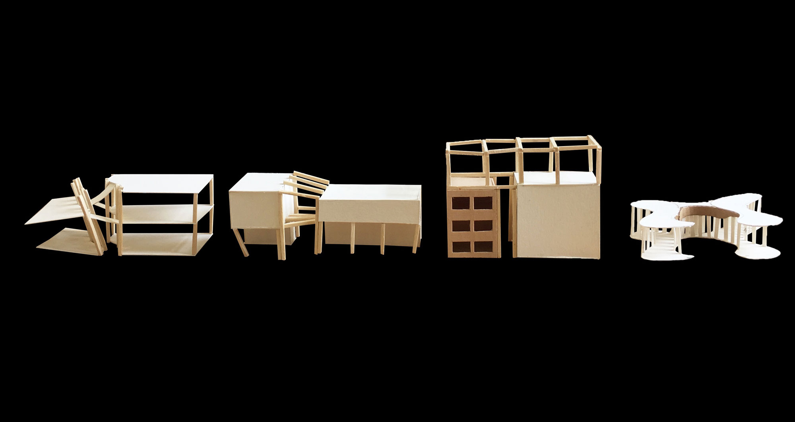
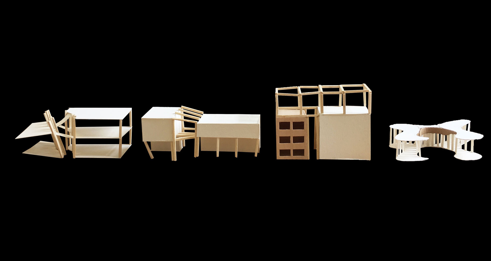
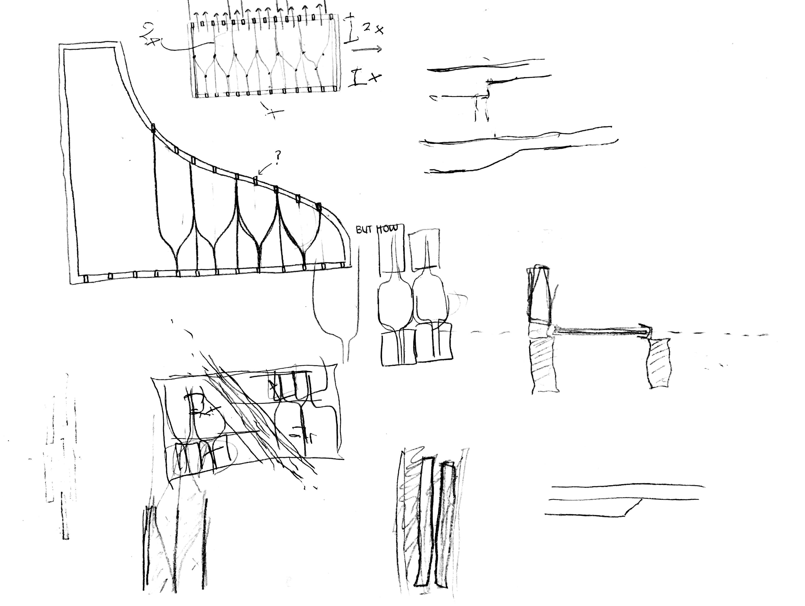
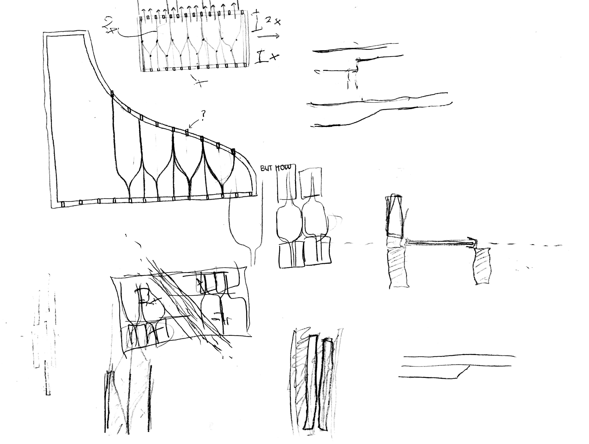

Spring 2019 | Advanced Construction Studio| Lawrenceville, PA | advised by Matthew Huber, Steve Lee
"Charter schools were created to provide opportunities for teachers, parents, students and community members to establish and maintain schools that operate independently from the existing school district structure as a method to accomplish the following: improve student learning; increase learning opportunities for all students; encourage the use of different and innovative teaching methods; create new professional opportunities for teachers; provide parents and students with expanded choices in the types of educational opportunities that are available within the public school system; and be accountable for meeting measurable academic standards."
An Environmental Charter School is a multi-disciplinary “out-the-door” learning approach that engages the students with environmental learning. The project site is located in Lawrenceville next to the National Robotics Engineering Center. It is surrounded by four major site boundaries: The Allegheny River, The National Robotics Engineering Center (NREC), the 40th Street Bridge, and The Railroad Tracks. There is also a public industrial passageway right across the street from the site.
West Facade Elevation (back of building).
Site Plan.
THE LANDSCAPE — a physical water experience
The building creates a connection with Allegheny River to educate the students about the environmental properties of water. This provided the opportunity for possible landscaping properties that create a physical connection between the river and the school. This hopes to mimic the same language of the vidision of spaces that the building has by creating a space for private use for the students and a space for public use.
Analytique - Communicates idea of rainwater flowing through the building through both horizontal and vertical movement.
THE FACADE — a visual water experience
The goal of the building is to allow for rainwater to flow through the building and allow for the students to use the water for environmental studies. Virga means a mass of streaks of rain appearing to hang under a cloud and evaporating before reaching the ground. This concept used on the building to mimic the visual of water always falling on the building to emphasize the idea that water is being used within this building.
Based on the concept that I am going for I wanted to create a visual language with the facade that would mimic the rain. Using this concept, I used this to drive where I placed windows, doors, and what types of structural details I wanted in the building. This visual language was integrated into the program that was designed, trying to integrate these large open spaces with the structure. In these large collaborative spaces the visual language of the structural beams con- veys something di erent than the other parts of the building.
Plans.
There are three major spaces in ECS, which are the green spaces, the think lab/collaborative spaces, and the public cafetorium. The organizational concept of this design was to create two passageways, the student pas- sageway on the left and the public passageway in the middle. The idea of the public passageway was to use it as a separation between the green space and the collaborative space to give an opportunity of “bridging” from one space to another and to eventually lead to the cafetorium.
Structural System — The building is composed of vertical and horizontal pieces of timber to create the language of building something structural using many small pieces rather than few large pieces.
Ramp System.
The concept of the ramp evolved into trying to incorporate an idea of having it circu- late throughout the entire building so that students could use it more frequently. It would act as a transfer from one space (the collaborative space) to another space (the environmental studios) across the public passageway.


 



 
